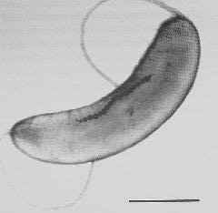

Agri Bio Zero¶
18-29 October 2021 / Nuria Conde & Jonathan Minchin
Research paper¶
The microbiome-gut-brain and social behavior July 2021, Journal for the Theory of Social Behaviour, by Gabe Ignatow
Summary & Reflections¶
In this paper, Ignatow explores the impact the microbioime-gut-brain (MGB), nutrition and dietary habits can have on social behaviors. “Focusing on nutrition as a critical element of the social environment influencing the gene-environment interactions and a range of social behaviors.” (Ignatow et al. 1). He starts by explaining the concept of relational biology, which “focus on how social and physical environments influence fundamental biological process marks these approaches as emergentist and sociological (Landecker, 2011; Meloni, 2014) rather than in any way reductionistic.” (Ignatow et al. 2). In my understanding, relational biology looks at biology in relation to, and not independent of, psychology and sociology. Ignatow goes on to outline the different biological systems that are in play within the MGB process: The ENS, BBB, Hormones and Neurotransmitters, and how each of these are affected by nutritional intake and in effect produce stress and psychiatric disorders. He outlines these as implications for an alternative way to understand and alter extreme social behaviors and psychiatric disorders.
I believe this research is useful for the future because it looks at a wholistic (non-reductionist) way of approaching disease and social behaviors. Through food, it builds a connection that is tangible for most of us who may not understand what is going on inside our bodies, but suffer the effects of malnutrition. In order to get to the root of these issues, I believe we need to look at our bodies, minds, and environments holistically, and understand the chain of connections that come along with it. This is in contrast to the field of Western medicine, where issues in the body are studied and treated in isolation. I believe this wholistic and relational approach is applicable in any field of study: design, biology, technology ecology, agriculture, or sociology, as we are moving towards an understanding that everything is interconnected and impacts everything else. For example, in design we can look at industrial production and climate crisis. I thought this article was an interesting and important study in a step towards a more connected understanding of our bodies, minds, environments and behaviors.
iGEM Experiment¶
Mission¶
To create a fabric that is able to generate and retain through embedding bacteria that’s able to generate heat. To be used for people without homes or general public in extreme cold environments.
Method¶
Magnetospirillum magneticum

Through online research, I came upon the Magnetospirillum magneticum bacteria that has been tested in producing heat through exposure to magnetic fields.
“In this work, we examine the mechanisms of heat production by whole intact cells of magnetotactic bacteria, Magnetospirillum magneticum strain AMB-1, as well as by their extracted chains of magnetosomes or extracted individual magnetosomes when they are exposed to an oscillating magnetic field of frequency 108 kHz and field amplitudes varied between 23 mT and 88 mT.” (E. Alphandéry, S. Faure, L. Raison, E. Duguet, P. A. Howse, and D. A. Bazylinski)
Hypothesized process
-
Extract DNA information from Magnetospirillum magneticum bacteria strand
-
Splice it into a biomaterial thread
-
Use the thread with bacteria DNA and magenetic fiber materials to weave fabric
-
Using different types of magnetic fibers will (hopefully) generate a magnetic field upon contact of materials and the bacteria will work to generate heat.
Course Reflections¶
In these past two weeks, we focused intensively on biology and agriculture in relation to technology and design. It was a lot of information and experimentation on both to pics, and I feel I have a better understanding of the foundational principles and functions moving forward. I will need some time to digest to see how these learnings can relate to my pursuits.
Biology¶
We dived into biology and learned about different types of metabolism, aerobic respiration, .. we made mediums that are living grounds for different types of bacteria and yeast. My table worked on a Auxitic Lactobacillus medium, which will only harbor lactobacillus bacteria. The recipe for this was fairly simple: milk and lemon and agar (to make a gel consistency). We sterilized the mediums in the pressure cooker, then used a Bunsen burner as a sterile zone to pour them into our petri dishes.
microbiology, how to identify microorganisms, and we used this knowledge in practice by taking two mediums we made in the previous day (I chose lactobacillus and all purpose bacteria) and going out to find different samples to test on the mediums. For both these mediums, I sampled the inside of the Iaac toilet bowl, which looked surprisingly clean, and my armpits. I chose these two because I was interested if the toilet bowl would have lactobacillus bacteria, since it is in close contact with our bodies. And for my armpits, I was curious if there would be any lactobacillus and how much bacteria would show up. We labelled our samples and placed them in the incubator.
 Figure 1
Figure 1
- We learned about spirulina and scoby.
- We used a microscope to examine the spirulina sample as well as some others.
- DNA and genomes
- Genetic Engineering
Agriculture¶
We learned about the different types of soil (clay, loam, sand, silt, and the mixture of these) and what the differences between these were. With our samples and some Jonathan brought, we made a hands on test to identify what types of soil these were. It was a tricky task because the characteristics could only be defined in relation to other soils. So we came to understand that having many samples to test will help focus in on defining the types of soil better.
Figure 1
Figure 1
Bees, types, lifecycles, designing for other species, beekeeping, behaviors of bees, open source beekeeping…
Different modes of agriculture, agroforestry, …
Essential oil making process
 Figure 1
Figure 1
 Figure 1
Figure 1
Biomaterials
Figure 1
Figure 1
Reflections¶
Design schools should teach biology and agriculture systems as a part of design program. Importance of understanding bio and eco system